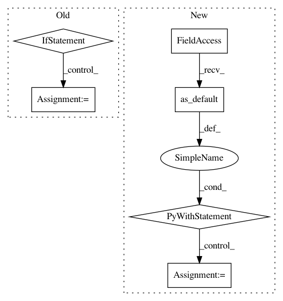

c96af58e6ab2f85626e51a331e8479da49329f0e,deepchem/models/tensorflow_models/__init__.py,TensorflowClassifier,predict_proba_on_batch,#TensorflowClassifier#Any#Any#,654
Before Change
self.eval_graph.output, feed_dict=feed_dict)
batch_outputs = np.asarray(data[:n_tasks], dtype=float)
// reshape to batch_size x n_tasks x ...
if batch_outputs.ndim == 3:
batch_outputs = batch_outputs.transpose((1, 0, 2))
elif batch_outputs.ndim == 2:
batch_outputs = batch_outputs.transpose((1, 0))
else:
raise ValueError(
"Unrecognized rank combination for output: %s " %
(batch_outputs.shape,))
// Note that softmax is already applied in construct_grpah
outputs = batch_outputs
return np.copy(outputs)
After Change
// weight decay
if self.penalty != 0.0:
penalty = model_ops.weight_decay(self.penalty_type, self.penalty)
loss += penalty
return loss
def fit(self, dataset, nb_epoch=10, max_checkpoints_to_keep=5,
log_every_N_batches=50, **kwargs):
Fit the model.
In pattern: SUPERPATTERN
Frequency: 3
Non-data size: 6
Instances
Project Name: deepchem/deepchem
Commit Name: c96af58e6ab2f85626e51a331e8479da49329f0e
Time: 2017-01-18
Author: joegomes@stanford.edu
File Name: deepchem/models/tensorflow_models/__init__.py
Class Name: TensorflowClassifier
Method Name: predict_proba_on_batch
Project Name: tensorflow/minigo
Commit Name: 39a106e526e70b5d64bf9f5404311eb490df6ea5
Time: 2018-06-12
Author: tmadams@google.com
File Name: inference_worker.py
Class Name:
Method Name: main
Project Name: google/unrestricted-adversarial-examples
Commit Name: b09bd8bb21519b0503ef59b8a801e7c1c8db4ae6
Time: 2018-09-12
Author: nottombrown@gmail.com
File Name: examples/undefended_keras_resnet/main.py
Class Name:
Method Name: